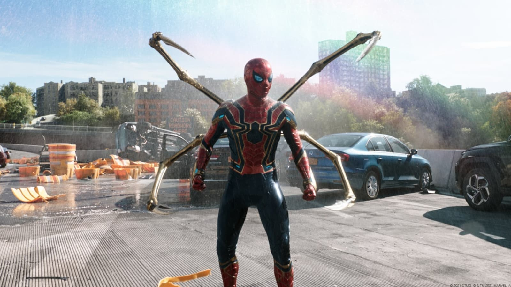

Photos

Peter Parker's secret identity is revealed to the entire world. Desperate for help, Peter turns to Doctor Strange to make the world forget that he is Spider-Man. The spell goes horribly wrong and shatters the multiverse, bringing in monstrous villains that could destroy the world.
Picking up where Far From Home left off, Peter Parker's whole world is turned upside down when his old enemy Mysterio posthumously reveals his identity to the public. Wanting to make his identity a secret, Peter turns to Doctor Strange for help. But when Strange's spell goes haywire, Peter must go up against five deadly new enemies--the Green Goblin, Dr. Octopus, Electro, the Lizard and Sandman--all while discovering what it truly means to be Spider-Man.
---Blazer346
With his identity compromised, right after the spectacular confrontation with super-hero charlatan Mysterio in Spider-Man: Far from Home (2019), Peter Parker is now with his back to the wall. On the run and having no one to turn to for advice, desperate Peter seeks a radical and equally dangerous solution to right a wrong, utterly unaware of the grave consequences of his ill-advised decision. And, as the unfathomable Multiverse expands with a vengeance, formidable adversaries from a not-so-distant past, too, seek closure, demanding the Spider's head on a platter. But when there's no way home and nowhere to hide, whom can Parker trust?
---Nick Riganas